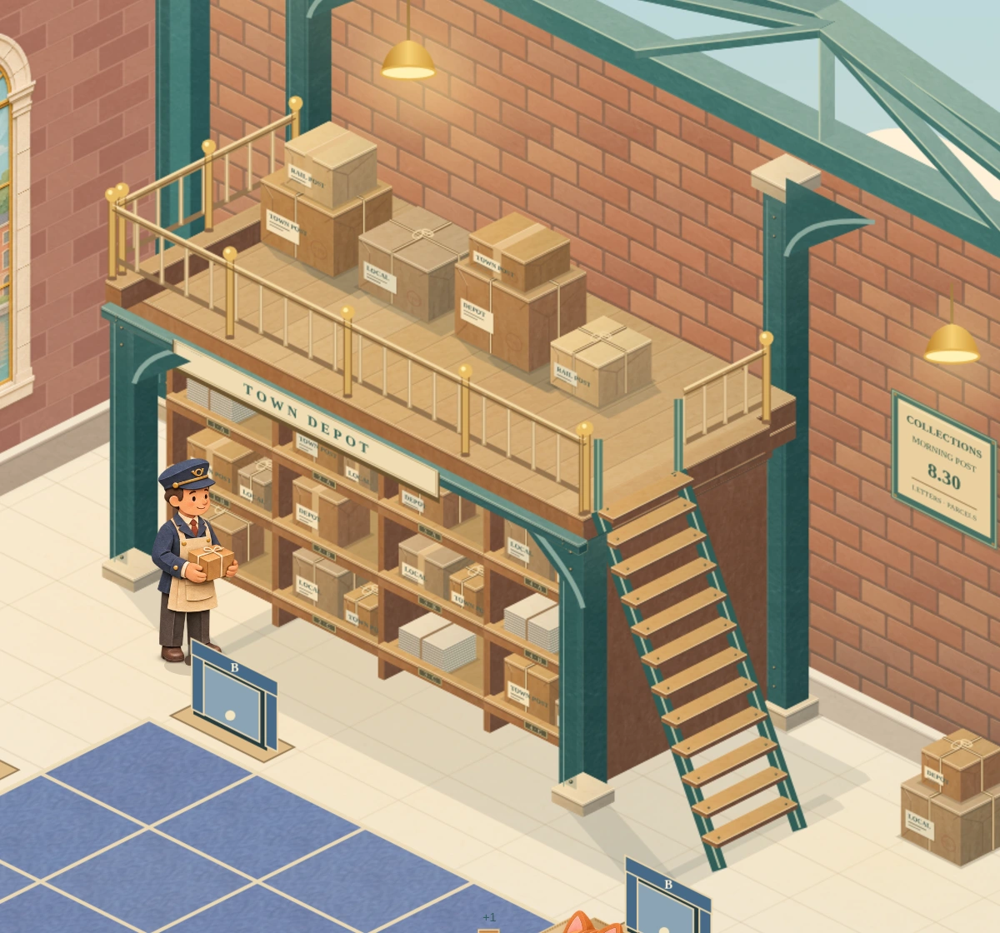
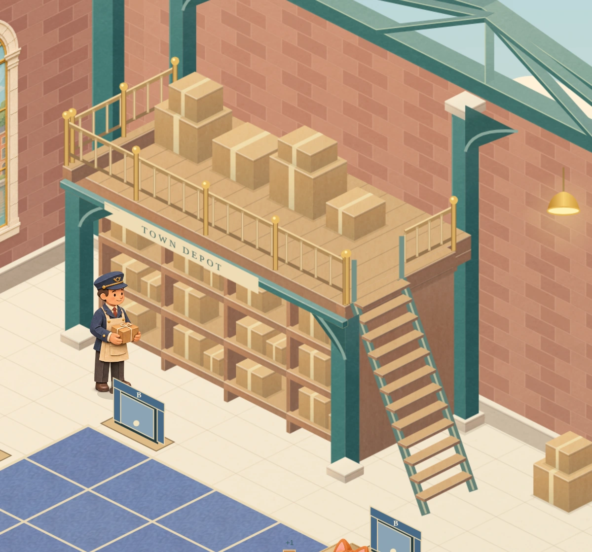
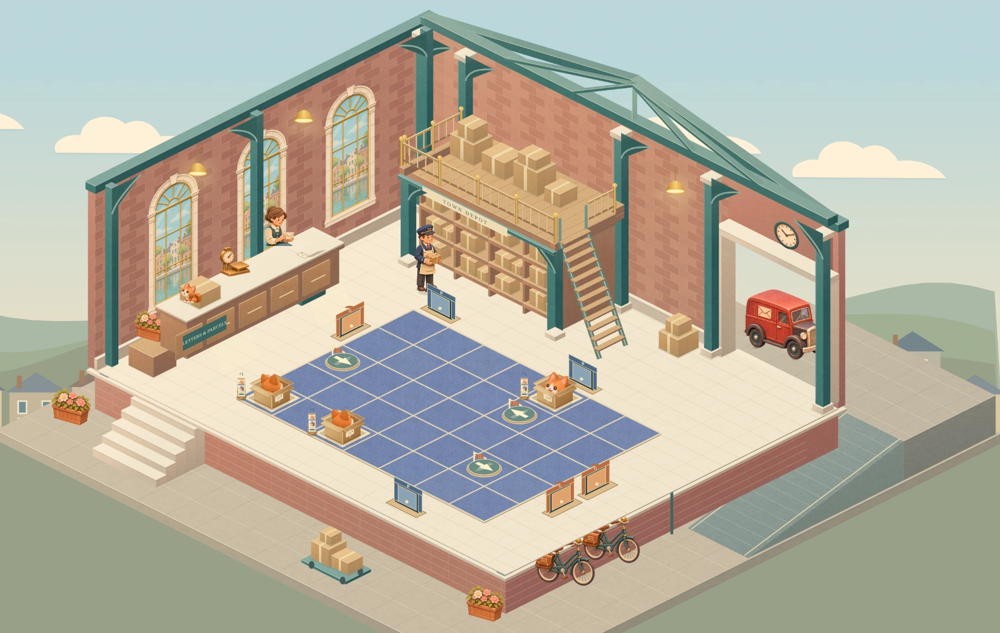
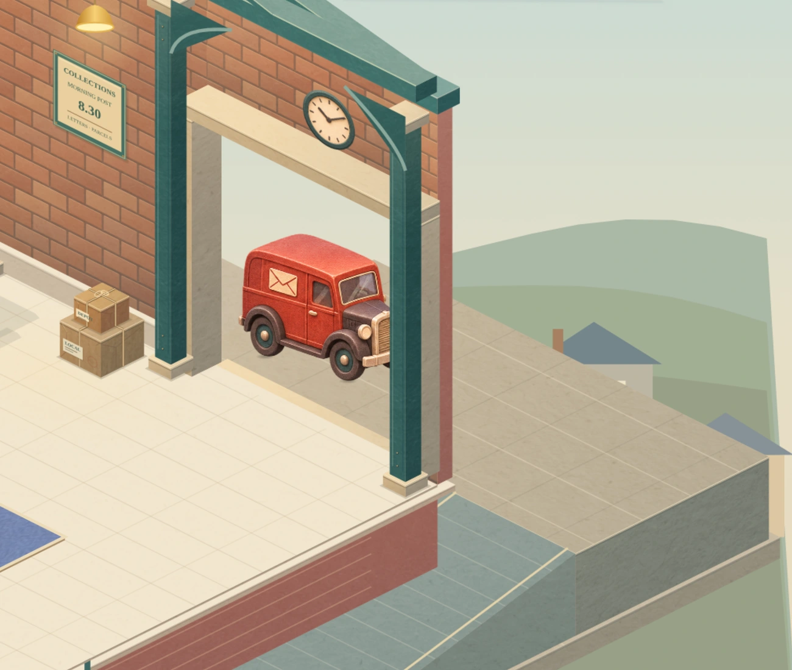
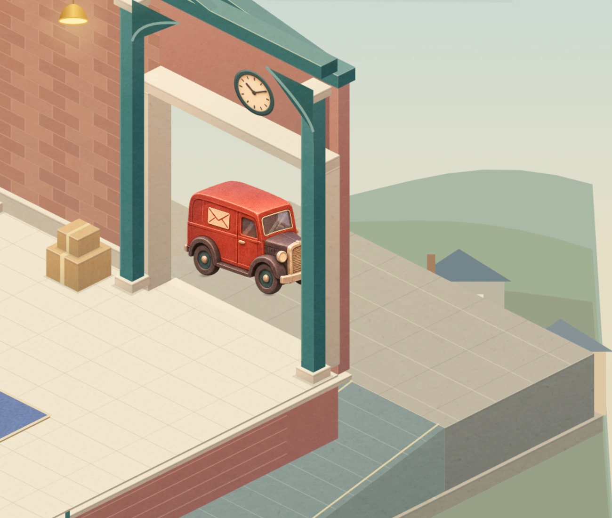
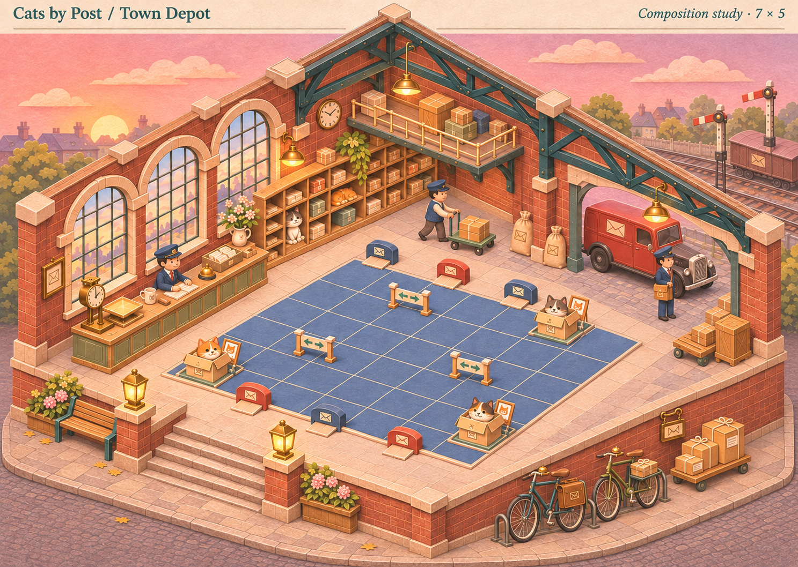
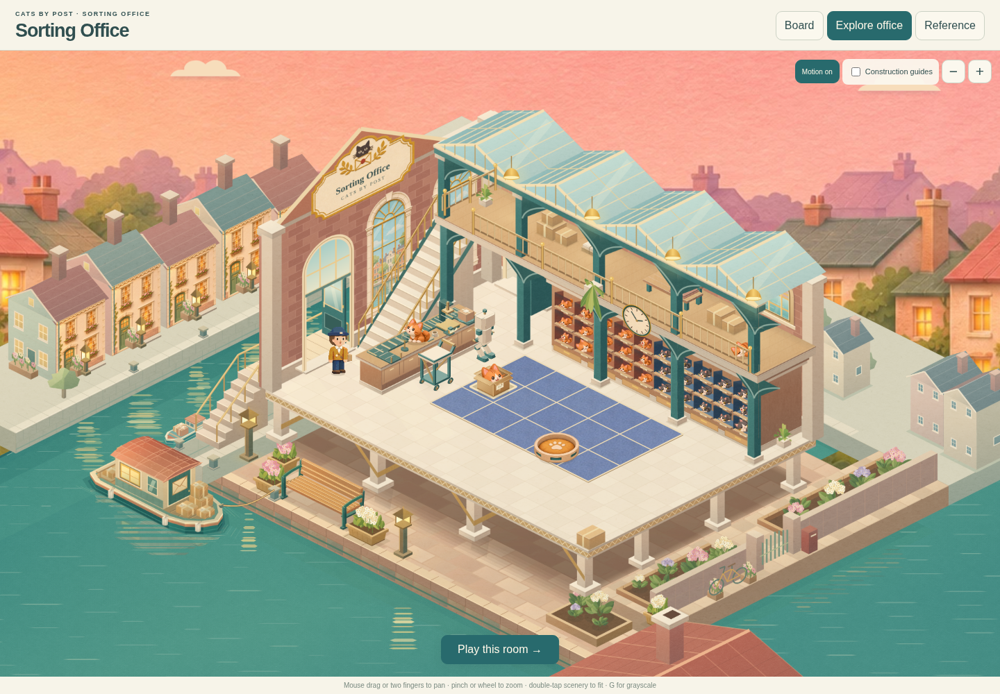
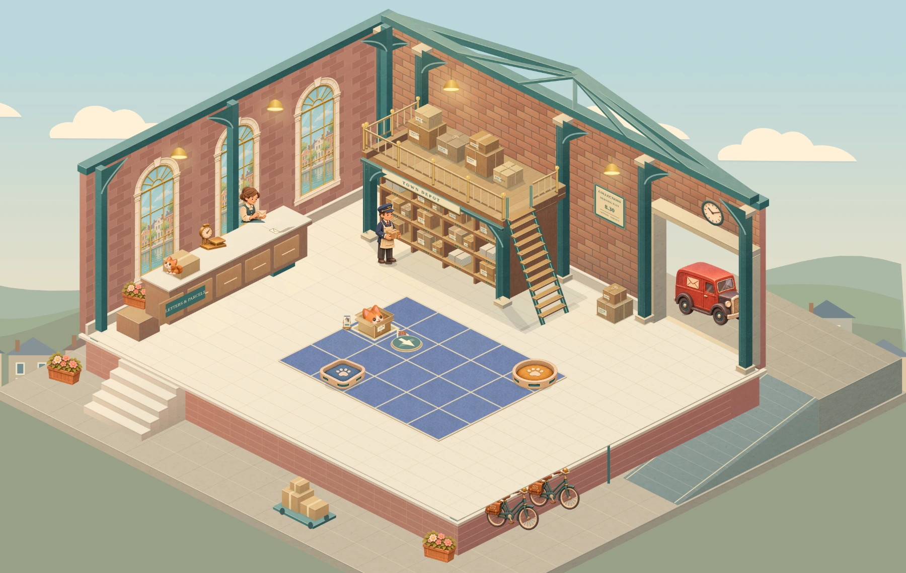
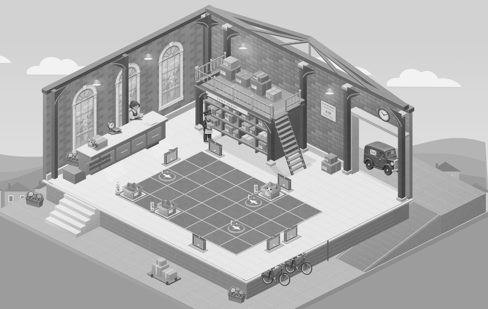
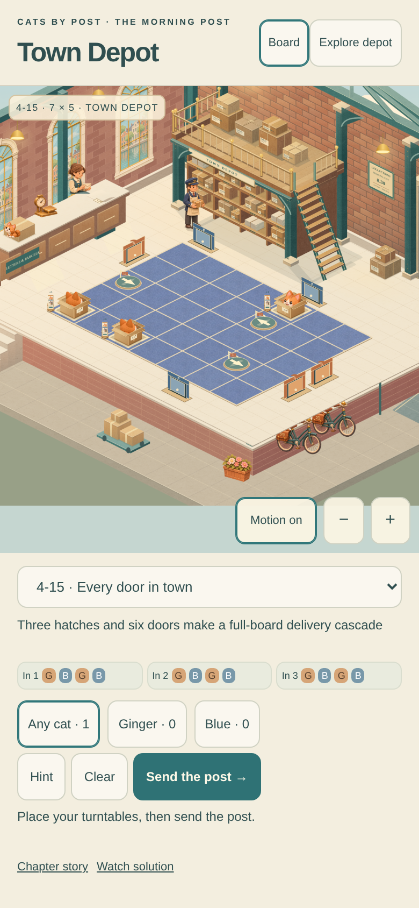

Cats by Post · Town Depot
A finished postal corner
The loft, sorting cubbies and loading bay now have a richer paper finish: folded kraft, tied bundles, recessed shelves, layered edges and warmer light.
The loft and sorting cubbies

Current finish · actual working renderer. Wrapped parcels, paper labels, bundles of letters, recessed cubbies and layered shelf edges. The accepted rails, clear walkway and connected stair remain in place.Compare the previous corner at the same camera

Previous structural checkpoint · identical camera, board and frozen ambient pose.Tap any image to open it full size and zoom. In the playable study, tap Explore depot to inspect the room.
This is the corner material review. The rest of the room and the fuller postal acting pass are still to come.
The maximum board, in context
 Delivery 4-15 · 7×5. This shows how the finished corner sits in the room. The counter, left wall, town scenery and character acting await the next pass.
Delivery 4-15 · 7×5. This shows how the finished corner sits in the room. The counter, left wall, town scenery and character acting await the next pass.Compare the previous full room

Previous structural checkpoint · same camera and 7×5 board.The loading bay

Layered doorway stone, painted ironwork, warm brick, a collections notice and finished parcels. The threshold and side ramp keep their accepted connection. The van remains parked in this checkpoint.Compare the previous loading bay

Previous loading-bay finish · matched camera.The references
The selected composition and approved Office remain the visual targets. These two images are references; the Depot images above are captures of the playable renderer.

Selected Depot composition · the direction for warmth, character and working postal life.
Implemented Sorting Office · reference for layered materials, light and grounding.First delivery, grayscale and phone layout

First delivery · 5×4.
Grayscale check from the renderer: board grid and portal silhouettes remain legible.
390×844 phone layout · Chromium emulation. This is not a physical Safari qualification.